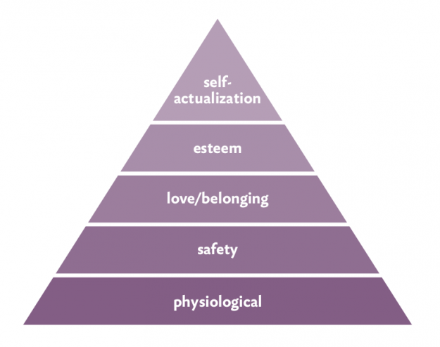

Fundierte Freiheit
Jeder von uns kann sicherlich bestätigen: Freiheit und Sicherheit sind zwei grundsätzliche Bedürfnisse. Die Art wie unser Staat und unsere Wirtschaft gestaltet sind, legt fest wie beiden Bedürfnissen entsprochen werden kann.
Wir behaupten: aktuell liegen wir falsch.
Um diese Behauptung zu untermauern, möchten ich den Vergleich mit der Lebenssituation eines Jugendlichen im elterlichen Haushalt ziehen:
Der Jugendliche ist in den Haushalt seiner Eltern eingebunden - er wird dort versorgt, untersteht aber auch gewissen Zwängen. Man denke beispielsweise an Rasen mähen oder Geschirr abspülen. Auch wenn es Kleinigkeiten sind, damit der Haushalt funktioniert ist beides notwendig. Und gerade diese begründbare Notwendigkeit macht die Zwänge für den Jugendlichen nachvollziehbar. Natürlich besteht für den Jugendlichen auch ein Freiraum: er kann Dinge sein eigenen nennen und darüber verfügen, er hat ein Zimmer, das er frei gestalten kann und nicht zuletzt kann er sich durch Jobs Dinge in Eigenregie erarbeiten.
Stellen wir uns vor der elterliche Haushalt sei unsere Gemeinschaft, der Jugendliche wir selbst. Unverkennbar genießen wir Freiräume, stehen aber auch unter wirtschaftlichen Zwängen.
Der entscheidende Unterschied zeigt sich, wenn man nach der Notwendigkeit der Zwänge fragt: In der Situation des Jugendlichen ergaben sich die Zwänge aus dem Funktionieren des Haushalts, sie waren begründbar. In unserer Gesellschaft fehlt dieser überprüfbare Zusammenhang beinahe vollständig.
Maslows Bedürfnispyramide
Der amerikanische Psychologe Abraham Maslow kam 1943 zu der Ansicht, dass menschliche Bedürfnisse in einem aufeinander aufbauenden Verhältnis zueinander stehen. Das Fundament sah er in dem Bedürfnis nach Sicherheit und körperlichem Auskommen wie der Ernährung.

Wenn wir an die Situation des Jugendlichen zurückdenken, dann lässt sich feststellen, dass die Zwänge denen er unterworfen ist sich aus den unteren zwei Stufen ableiten lassen.
Die Essenz der Idee, die ich im folgenden darstellen möchte, ist, die untersten zwei Ebenen durch demokratisch organisierte gesellschaftliche Kooperation sicher zu stellen und alles Andere der freien Zusammenkunft, dem individuellen Wirtschaften zu überlassen.
Grundpfeiler
Die Struktur des Staats sollte nach und nach so abgeändert werden, dass sie folgende vier Grundpfeiler erfüllt:
- Grundabsicherung ohne Bedürftigkeitsprüfung („moderner Lebensstandard“) für all jene Bürger, die darauf zückgreifen möchten.
- Kostenlose öffentliche Verkehrsmittel.
- Gemeinschaftliche Produktion und Bereitstellung der Grundabsicherung.
- Finanzierung durch Arbeitszeit statt Geld-Steuer.
Auswirkungen
Für den Bürger:
Nachvollziehbarkeit
Betrifft: Grundabsicherung, Gemeinschaftliche Produktion, Finanzierung durch Arbeitszeit Die gemeinschaftliche Produktion garantiert, dass der Bürger nachvollziehen und verstehen kann, warum und im welchem Umfang er Arbeiten muss um einen modernen Lebensstandard zu halten.
Wettbewerb, wo Wettbewerb hingehört
Betrifft: Grundabsicherung, Gemeinschaftliche Produktion, Finanzierung durch Arbeitszeit Und zwar in den Bereich der wirtschaftlichen Betätigung, der sich nicht auf die Grundabsicherung bezieht - ein Mensch sollte nicht um seine Lebensgrundlage kämpfen müssen.
Vernetzung und kultureller Austausch
Betrifft: Grundabsicherung, Öffentliche Verkehrsmittel Kombiniert man Grundabsicherung und frei nutzbare öffentliche Verkehrsmittel, eröffnen sich für alle völlig neue Möglichkeiten, an der sozialen Vernetzung und dem kulturellen Austausch teilzunehmen.
Interesse am Gemeinwohl
Betrifft: Finanzierung durch Arbeitszeit Selbst an der Bereitstellung der Grundabsicherung beteiligt zu sein, anstatt sie abstrakt über Steuern zu finanzieren, hat das Potential, Identifikation und Fürsorge zu stärken - wer sich regelmäßig um die Säuberung des Stadtparks kümmert, wird sicher weniger Müll hinterlassen.
Rückenstärkung auf dem Arbeitsmarkt
Betrifft: Grundabsicherung Eine Grundabsicherung, auf die man zählen kann, schafft Planungssicherheit - so muss man sich weder schlechte Arbeitsbedingungen noch jede Laune des Vorgesetzten gefallen lassen.
Ehrenamt ohne Grenzen
Betrifft: Grundabsicherung, Öffentliche Verkehrsmittel Hat man den Rücken durch eine Grundabsicherung frei und ist man durch frei nutzbare öffentliche Verkehrsmittel mobil, steht ehrenamtlichem Engagement außer der eigenen Courage nichts mehr im Weg.
Vielseitigkeit statt Knick im Lebenslauf
Betrifft: Grundabsicherung Die Rückenstärkung für die Arbeitnehmer könnte auch bedeuten, dass der „astreine Lebenslauf“ an Bedeutung verliert. Zeit für die Familie, Zeit für Angehörige, Zeit, um seine eigenen Pläne zu verwirklichen - und das, ohne die „Karriere“ aufgeben zu müssen. Eine schöne Vorstellung.
Wertschätzung abseits des Einkommens
Betrifft: Grundabsicherung Die Unabhängigkeit von monetärem Einkommen könnte es möglich machen, die Anerkennung von Arbeit mehr an andere Kennzeichen als das Gehalt zu koppeln.
Jeder kann (und muss) etwas zurückgeben
Betrifft: Grundabsicherung, Finanzierung durch Arbeitszeit Das Gefühl nicht gebraucht zu werden, weil der Markt keine Möglichkeiten bietet sich zu betätigen, würde, aufgrund der Grundabsicherung, der Vergangenheit angehören - die Aufregung über „Sozialschmarotzer“ würde sich in Wohlgefallen auflösen, denn es wäre einfach festzustellen, wer sich der Mitarbeit verweigert und wer nicht.
Für die Beziehung Bürger-Staat:
Transparenz
Betrifft: Gemeinschaftliche Produktion, Finanzierung durch Arbeitszeit Die Grundsicherung erfordert bestimmte Menge an Gütern und Dienstleistungen - die dafür aufzubringende Arbeitszeit lässt sich genau bestimmen. Diese Arbeitszeit wird auf die Staatsbürger umgelegt.
Diese Grundabsicherung mit „Arbeitszeit-Steuer“ bringt gegenüber dem bisherigen Modell der reinen „Geld-Steuer“ einen viel höheren Grad an Nachvollziehbarkeit - ganz im Gegensatz zur „Geld-Steuer“, bei der Höhe und Umfang kaum nachvollziehbar sind.
Automatisierung wird positiv
Betrifft: Grundabsicherung, Finanzierung durch Arbeitszeit Und wenn dann das nötige Fachwissen vorhanden ist, lassen sich sicher so manche Verbesserungen finden. Diese könnten natürlich demokratisch eingebracht werden - im Bezug auf die gemeinschaftliche Produktion der Grundabsicherung hat jeder Interesse an Optimierung und Automatisierung!
Politik: aktiv-souverän statt passiv-reagierend
Betrifft: Finanzierung durch Arbeitszeit Es scheint aktuell, als sei die Politik immer einen Schritt hinterher - gefangen zwischen gigantischen Unternehmen, die man besser nicht verärgern möchte. Eine Grundabsicherung, bereitgestellt durch eine gemeinschaftliche Produktion, könnte den Fokus der Politik wieder auf die Gestaltung legen: Optimierung, Automatisierung sowie die Verbesserungen des Leistungsumfangs statt Rettungsschirme und Konjunkturprogramme.
Für die Beziehung Staat-Ausland:
Zuwanderung heißt Beteiligung
Betrifft: Finanzierung durch Arbeitszeit Kommen neue Bürger in die Gemeinschaft, so haben sie wie alle anderen ihren Teil beizutragen. Dies vereinfacht einerseits die Integration und nimmt andererseits denen die Angst, die befürchten unser Sozialsystem würde ausgenutzt werden.
Wettbewerb der Staaten - ohne Angst
Betrifft: Grundabsicherung, Finanzierung durch Arbeitszeit Wenn die Gemeinschaft sich aus eigener Kraft grundversorgt, dann kann sie gelassener mit internationalem Wettstreit umgehen. So souverän, wie der grundabgesicherte Bürger möglichen Arbeitgebern gegenüber steht, so souverän würde der Staat mit Grundsicherung anderen Staaten gegenüber stehen.
Für die Beziehung Wirtschaft-Staat:
Wirtschaftliche Schwankungen? Nicht mit uns!
Betrifft: Finanzierung durch Arbeitszeit Da die Grundsicherung durch die Gemeinschaft erfolgt, haben wirtschaftliche Schwankungen keine Auswirkung auf die Verfügbarkeit gemeinschaftlicher Leistungen. Kein Hokus-Pokus mit Wirtschaftswaisen, die über Aufs und Abs orakeln.
Lobbyismus? Nicht mit uns!
Betrifft: Grundabsicherung, Gemeinschaftliche Produktion, Finanzierung durch Arbeitszeit Solange die Gemeinschaft auf Geldeinnahmen aus Steuern angewiesen ist und die Bürger bei Firmenschließungen in das soziale Aus fallen, solange haben Unternehmen gute Argumente ihre „Zeche“ zu prellen. „Wir sollen alle Steuern zahlen? Oh, dann werden wir wohl unsere Produktionsstätte verlegen müssen.“ - so einfach würde es nicht mehr sein, da gemeinschaftliche und wirtschaftliche Produktion entkoppelt wären.
Umsetzung
Ich halte zwei Wege zur Umsetzung gangbar: Zum einen den politischen Weg und zum anderen den privaten beziehungsweise kommunalen.
Politische Umsetzung
Bei der politischen Umsetzung ist zunächst einmal die generelle Umsetzbarkeit von Interesse:
Die auf den ersten Blick problematischsten Punkte wären die gemeinschaftliche Produktion, die eventuell zur Rekommunalisierung und Verstaatlichung mancher Flächen und Betriebe führen würde und die Verpflichtung zur Mitarbeit. Diese wie auch die anderen beiden Grundpfeiler sind grundrechtskonform umsetzbar. So zum Beispiel im Rahmen der Wehrpflicht oder der Verstaatlichung von Landflächen beim Bau von Autobahnen.
Das heißt, dass das grundlegende Problem für die politische Umsetzung die schiere Masse an Befürwortern ist, die dafür notwendig ist. Eine Lösung, die weniger Befürworter erfordert, ist die Umsetzung „von unten“ privat oder auf kommunaler Ebene.
Private/kommunale Umsetzung
Abstrakt formuliert stehen die vier Grundpfeiler (Grundabsicherung, Gemeinschaftliche Produktion, freie öffentliche Verkehrsmittel, Finanzierung durch Arbeitszeit) für die Unabhängigkeit der bürgerlichen Gemeinschaft von wirtschaftlichen Umständen und Schwankungen.
Diese Unabhängigkeit ist auf privater Ebene annäherbar, wie das Project Earthship (siehe auch Wikipedia) zu zeigen scheint. Dabei sind im Normalfall aber Einschnitte bezüglich des Lebensstandards hinzunehmen. Diese Einschitte können dadurch reduziert werden, dass man nicht nur als Einzelperson, sondern als Kleingruppe oder gar ganze Kommune agiert.
Über das Hausrecht wäre es selbst im privat organisierten Verband möglich, eine Mitarbeitspflicht durchzusetzen. Einfach dadurch dass diejenigen Hausverbot erhalten, die die Mitarbeit verweigern.
Für eine möglichst kostenschonende Umsetzung wäre ein Einsatz der durch das Open Source Ecology Projekt (siehe auch Wikipedia) geschaffenen Technologien denkbar.
In jedem Fall: Gleichgesinnte finden
Die wichtigste Aufgabe ist aktuell die Verbreitung und Diskussion der Idee. Dabei ist natürlich wichtig festzustellen, wie viel Interesse besteht. Sollten Sie Interesse an der Umsetzung dieser Idee haben, tun Sie dies bitte durch Eintragen in den Newsletter kund.
Sollten Sie Ideen zum Einbringen haben, bitte nicht zögern und den Diskussionsbereich ganz unten nutzen oder mich direkt kontaktieren!
Newsletter
Um den Newsletter zu abonnieren, sende Sie bitte eine Email mit dem Titel „subscribe“ an mich.
Diskussion
Hier ist Raum für eigene Ideen. Gibt es weitere Auswirkungen, die wichtig sind? Vernachlässigen manche Begründungen wichtige Aspekte? Ist es überhaupt eine gute Idee oder nur ein Hirngespinst? Oder sind Sie bereits überzeugt und halten es für umsetzenswert?